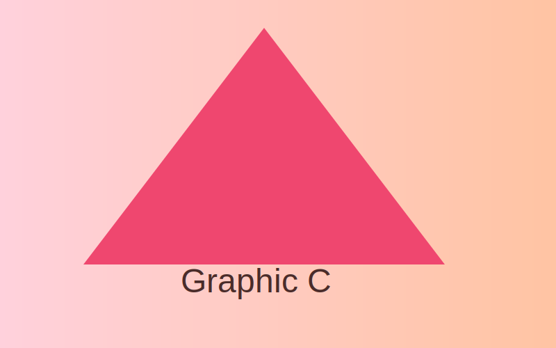

Giới thiệu
Đây là trang 'Giới thiệu' nơi chúng ta mô tả mục tiêu của trang ví dụ này và cách tiếp cận về khả năng truy cập và thiết kế.
Mục tiêu
Tạo 3 trang HTML với các yêu cầu về CSS: position + :focus, grid, flex, hover, nth-child, và box-model cho ảnh.
Hình ảnh minh họa

